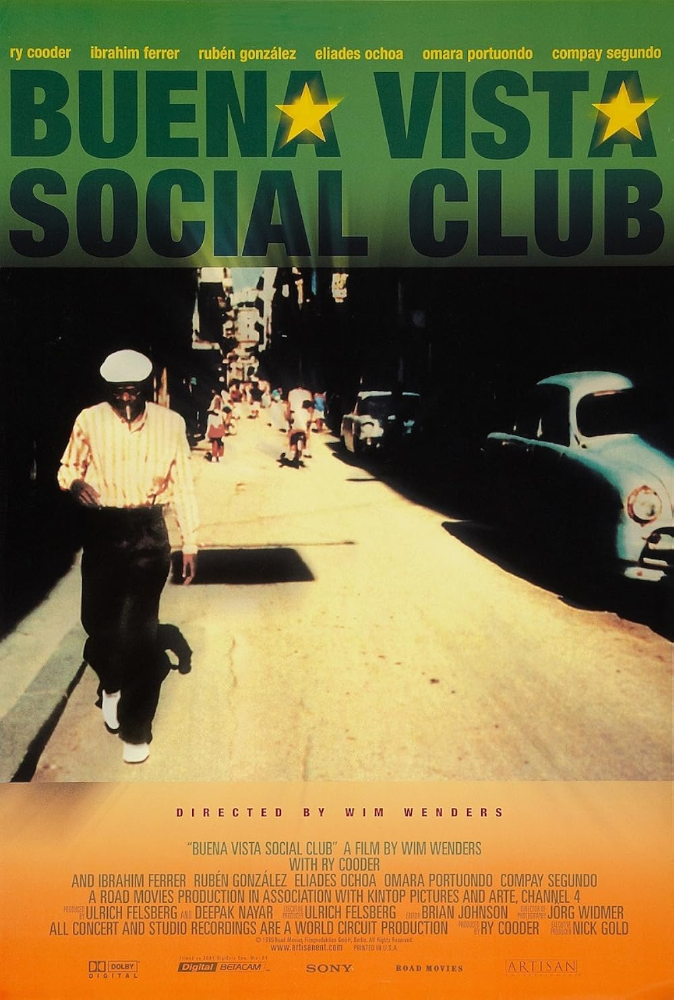

Buena Vista Social Club
72nd Academy Awards
(Oscars 2000)
1 Nomination, 0 Awards
| Nominations | ||
|---|---|---|
| Category | Nominees | Result |
| Documentary (Feature) | Ulrich Felsberg and Wim Wenders | Nominated |